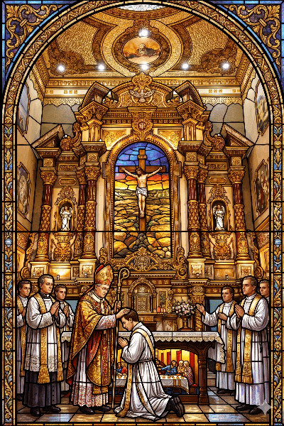

குருத்துவம்
திருப்பலி மற்றும் அருளடையாளங்களை நிறைவேற்றவும், நற்செய்தி அறிவிக்கவும், இறைமக்களை வழி நடத்தி உருவாக்கவும் உரிமை அளிக்கிற அருளடையாளமே குருத்துவம் ஆகும்.
ஒருவர் குருவாக அல்லது துறவியாக அழைக்கப்படுகிறார் எனில் அது வாழ்க்கை முழுவதற்குமான அழைப்பு. குருத்துவம் அல்லது துறவறம் கடவுளின் கொடை இறைப்பணியில் ஆர்வம், இறைநம்பிக்கை, மேல் நிலைப்பள்ளி படிப்புத் தேர்ச்சி, நல்ல உடல் நலம், நல்ல கிறிஸ்தவ குடும்பப் பின்னணி உள்ள நபர் பங்குத் தந்தையை அணுகவும்.
--
#மண்ணின் மைந்தரிகள் : அருள் தந்தியார்கள்
| எண் | பெயர் | பெற்றோர் | குருப்பட்டம் | பணித்தளம் |
|---|---|---|---|---|
| 1 | அருள்திரு. இருதயநாதன் | செல்வராஜ் ஆரோக்கியமேரி |
29.9.1972 | தருமபுரி மறைமாவட்டம் |
| 2 | அருள்திரு. செல்வம் | மாரியசூசை (அ) குழந்தைசாமி சவரிமுத்தம்மாள் |
12.8.1974 | சேலம் மறைமாவட்டம் |
| 3 | அருள்திரு. பிரான்சிஸ் சேவியர் | சவரியப்பன் அந்தோணியம்மாள் |
25.5.1977 | சேலம் மறைமாவட்டம் |
| 4 | அருள்திரு. ரொசாரியோ | அருள்நாதன் தெரசா |
21.11.1988 | தருமபுரி மறைமாவட்டம் |
| 5 | அருள்திரு. மரிய அம்புரோஸ் | அந்தோணிசாமி தெரசா |
29.8.1992 | சலேசிய சபை |
| 6 | அருள்திரு. ஆரோக்கியராஜ் | ஜார்ஜ் குழந்தை தெரசா |
27.12.1993 | சலேசிய சபை |
| 7 | அருள்திரு. மரியசார்லஸ் | அந்தோணி செல்வமேரி |
29.12.1994 | சலேசிய சபை |
| 8 | அருள்திரு. மரிய ஆரோக்கியராஜ் | அந்தோணிசாமி தெரசா |
29.12.1995 | சலேசிய சபை |
| 9 | அருள்திரு. பிரிட்டோ | அந்தோணி நம்பிக்கைமேரி |
14.1.1997 | கப்புச்சின் சபை |
| 10 | அருள்திரு. அந்தோணிதாஸ் | மதலைமுத்து இருதய மேரி |
15.1.1998 | கப்புச்சின் சபை |
| 11 | அருள்திரு. சைமன் | டேவிட் கமலா |
7.5.1998 | சலேசிய சபை |
| 12 | அருள்திரு. ஆல்பர்ட் ஜோசப் | அகஸ்டின் மேரி பிரின்சனா |
2.5.2000 | தருமபுரி மறைமாவட்டம் |
| 13 | அருள்திரு. டேனியல் அம்புரோஸ் | சவரிநாதன் அமலோர்பவமேரி |
24.12.2000 | சலேசிய சபை |
| 14 | அருள்திரு. சார்லஸ் யேசுதாஸ் | அமலதாஸ் தெரசா சாந்தி |
25.4.2003 | வேலூர் மறைமாவட்டம் |
| 15 | அருள்திரு. ஜான் ரிச்சர்டு | அமலநாதன் ஜோசபின் |
9.8.2003 | சலேசிய சபை |
| 16 | அருள்திரு. ராய் பிரசாத் மோசஸ் | மோசஸ் அந்தோணியம்மாள் |
23.5.2003 | பெங்களூரு மறைமாவட்டம் |
| 17 | அருள்திரு. போஸ்கோ | அகஸ்டின் மேரி பிரான்சனா |
30.12.2004 | சலேசிய சபை |
| 18 | அருள்திரு. ஜூடு | மரியசூசை அருள்மேரி |
7.9.2005 | MMI |
| 19 | அருள்திரு. வினோத் | ஞானப்பிரகாசம் புளோரா ஜான்சிராணி |
27.12.2005 | சலேசிய சபை |
| 20 | அருள்திரு. ஜான்போர்க் | சவரிநாதன் சின்னராணி |
26.12.2012 | சலேசிய சபை |
| 21 | அருள்திரு. தாமஸ் ஆன்ட்ருஸ் ஜான் | சேவியர் மேரி ஜோஸ்பின் |
11.5.2017 | பல்லோட்டின் சபை |
| 22 | அருள்திரு. சின்னப்பன் | அந்தோணிசாமி ஆரோக்கியமேரி |
9.5.2018 | தருமபுரி மறைமாவட்டம் |
--
#மண்ணின் மைந்தரிகள் : அருள் சகோதரிகள்
| அருட்சகோதரிகளின் பெயர்கள் | முதல் வார்த்தைப்பாடு | இறுதி வார்த்தைப்பாடு |
|---|---|---|
| அருட்சகோதரி பிலோமினா அமலா | 11-12-1971 | 11-12-1977 |
| அருட்சகோதரி மேரி | 25-05-1975 | 31-05-1980 |
| அருட்சகோதரி ரெஜினா மேரி | 14-02-1982 | 19-03-1987 |
| அருட்சகோதரி N.S. பாத்திமா | 25-05-1979 | 25-05-1987 |
| அருட்சகோதரி சிரியா புஷ்பம் | 25-05-1982 | 30-05-1988 |
| அருட்சகோதரி லூர்து மேரி | 15-08-1993 | 08-03-1999 |
| அருட்சகோதரி மணி சௌரி | 06-01-1993 | 17-04-1999 |
| அருட்சகோதரி வசந்தா மேரி | 25-03-1996 | 16-05-2001 |
| அருட்சகோதரி ஜோசபின் மிரியம் | 13-04-1999 | 12-08-2005 |
| அருட்சகோதரி அமலோற்பவ மேரி | 30-05-2002 | 05-06-2008 |
| அருட்சகோதரி மேரி ஸ்டெல்லா | 29-05-2003 | 05-09-2009 |
| அருட்சகோதரி ஷீலா அருள் செல்வி | 25-05-2004 | 05-04-2011 |
| அருட்சகோதரி ரூபி ரெபேக்கா | 05-12-2005 | 22-05-2012 |
| அருட்சகோதரி ஜெசிந்தா ஆரோக்கிய மேரி | 05-01-2004 | 12-09-2012 |
| அருட்சகோதரி புளோரா மக்தலேனா | 05-07-2008 | 05-06-2014 |
| அருட்சகோதரி ஆரோக்கிய மேரி | 09-07-2009 | 21-11-2015 |